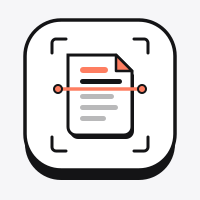

Scanne Dokumente. Direkt im Browser.
Kein Konto, keine Cloud, keine Kosten – nur dein Browser, der seine Sache gut macht.
Neu scannen
100 % lokalNoch keine Seiten. Fotografiere oder importiere ein Dokument, um zu beginnen.

Dokumenten-ScannerKein Konto, keine Cloud, keine Kosten – nur dein Browser, der seine Sache gut macht.
Noch keine Seiten. Fotografiere oder importiere ein Dokument, um zu beginnen.